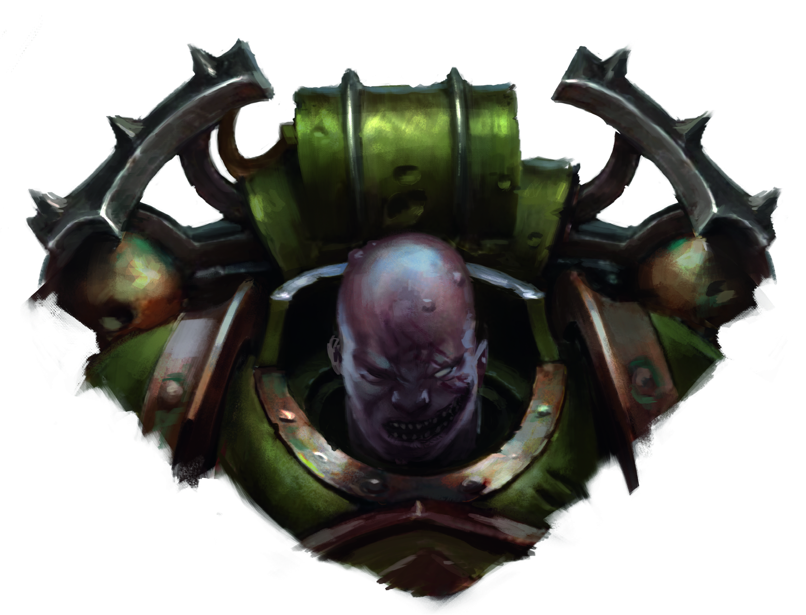
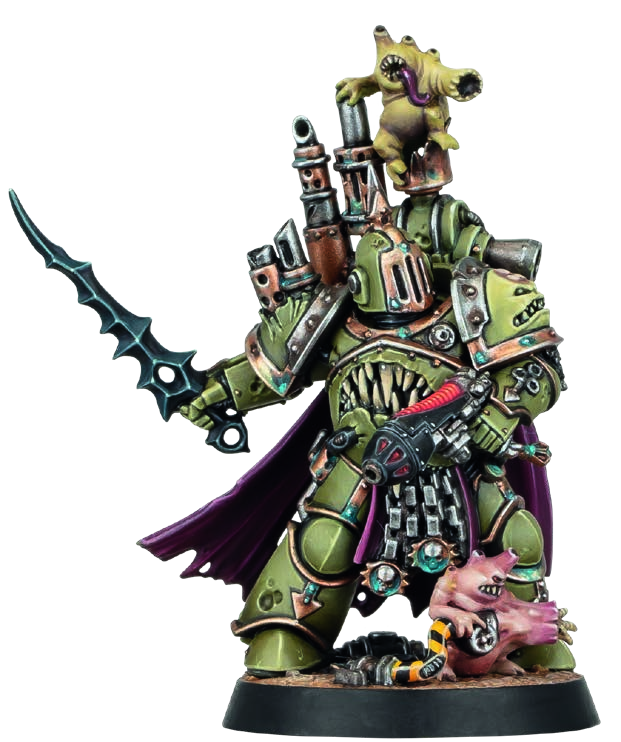
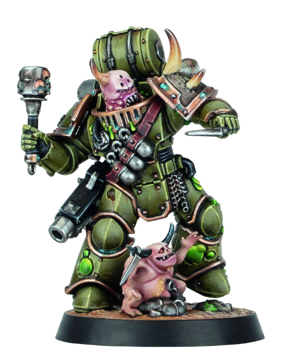
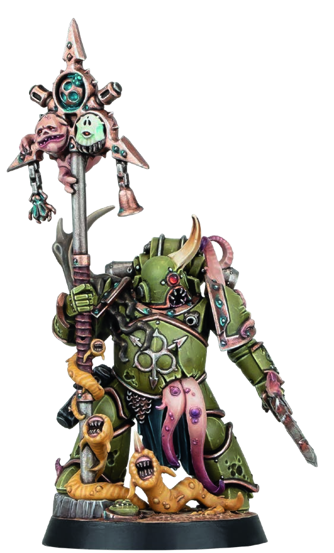
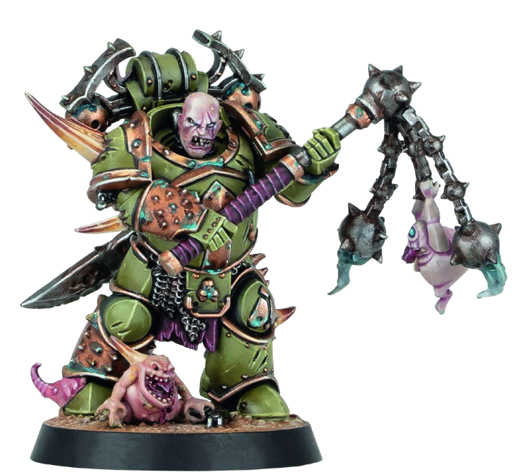
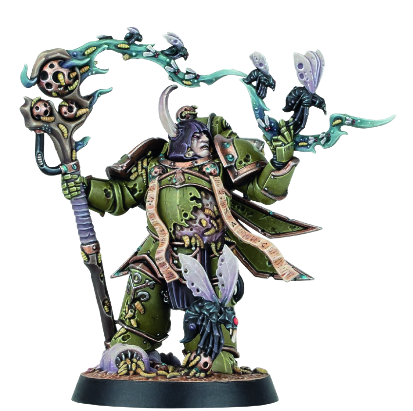
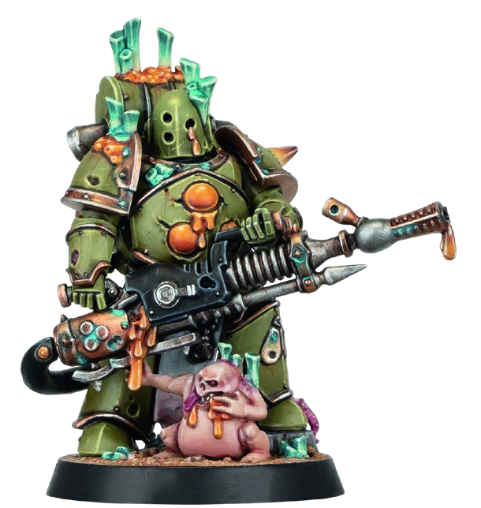
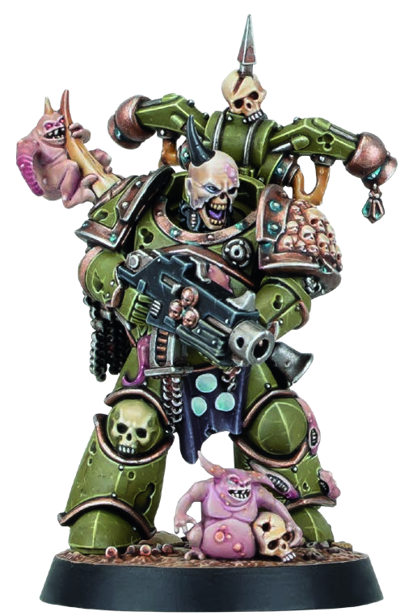

DEATH GUARD / NURGLE
殺戮小隊：瘟疫戰士 (PLAGUE MARINES)
效忠於慈父納垢的死亡守衛背叛者修士。身披腐化膨脹的生化裝甲，肉體散發致命惡疫與毒瘴。瘟疫戰士擁有「噁心堅韌」的不死軀體，無懼任何重創，以惡疾與腐爛火力蠶食戰場。

戰隊組建名冊 (KILL TEAM OPERATIVES)
總計 6 名特工
莫塔里安的墮落子嗣體內充斥著潰爛與疫病，雖步履蹣跚，卻具備駭人聽聞的非凡韌性。
1. 首領特工 (LEADER)：包含 1 名
- 瘟疫戰士冠軍頭目 (Plague Marine Champion)
- 瘟疫戰士轟炸手 (Plague Marine Bombardier)
- 瘟疫戰士格鬥家 (Plague Marine Fighter)
- 瘟疫戰士重裝槍手 (Plague Marine Heavy Gunner)
- 瘟疫戰士扛旗手 (Plague Marine Icon Bearer)
- 惡意施瘟者 (Malignant Plaguecaster)
- 瘟疫戰士常規戰士 (Plague Marine Warrior)
作戰原型 (ARCHETYPES)
安全警戒 / 搜尋與摧毀
瘟疫戰士殺戮小隊可採用 安全警戒 (SECURITY) 以及 搜尋與摧毀 (SEEK & DESTROY) 作戰行動卡牌。
納垢聖數密語 (SIGIL OF NURGLE)
慈父納垢的神聖數字為 7，其腐化印記顯化為 3。其無邊瘟疫便自此神聖數列中奔湧而出。
戰隊中的多項能力與射程均緊扣 7" 與 3" 之神聖距離結算。
陣營特規：阿斯塔特 (ASTARTES)
友方瘟疫戰士特工在其單次啟動期間內，可以執行兩次「射擊 (Shoot)」行動，或兩次「格鬥 (Fight)」行動。
- 若宣告執行兩次「射擊」行動，則其中至少有一次必須選用爆彈手槍 (Bolt pistol)、爆彈槍 (Boltgun) 或 靈能武器 (PSYCHIC weapon)。
- 在同一次啟動期間內，同一把靈能遠程武器不可選擇超過一次。
- 每名友方瘟疫戰士特工在反制階段均可執行反制行動 (Counteract)，不受其當前姿態指令（交戰或匿蹤）限制。
陣營特規：劇毒標記 (POISON)
狀態特規
納垢的惡魔毒素與靈魂潰爛無視自然免疫與任何常規醫療救援。
若武器具備「劇毒 (Poison)」特規，在結算攻擊骰 (Resolve Attack Dice) 步驟中，只要有任何成功骰造成傷害，被攻擊的目標特工（不包含友方瘟疫戰士）立即獲得 1 枚你的「劇毒標記 (Poison token)」（若其身上尚未持有）。
持續折磨：凡帶有你的劇毒標記之特工每次被啟動時，立即承受 1 點傷害。
持續折磨：凡帶有你的劇毒標記之特工每次被啟動時，立即承受 1 點傷害。
陣營特規：噁心韌性 (DISGUSTINGLY RESILIENT)
防禦減傷
納垢信徒的肉身因死亡與腫脹而麻木，刀槍不入。
每當有攻擊骰對友方瘟疫戰士特工造成 3 點或更多傷害 時，擲一顆 D6：若結果為 4+，該次造成的傷害減 1 點。
戰略策略 (STRATEGY PLOYS) — 戰略階段宣告使用
傳染病威能 (CONTAGION)
1 CP
腐敗的毒瘴自其軀體滲出，大幅削弱周遭敵軍的氣力。
當敵方特工符合下列任一條件時，其移動力 Move 扣減 2"，且武器的 Hit 命中門檻惡化 +1（不可與重傷 Injured 效果累加）：
- 帶有你的劇毒標記，且處於友方特工 3" 範圍內且彼此可見。
- 處於友方瘟疫戰士扛旗手 3" 範圍內且彼此可見。
蹣跚死境 (LUMBERING DEATH)
1 CP
瘟疫戰士推進沉穩堅定，在堅韌的行進中傾瀉死神火力。
當友方特工於同次啟動中移動距離未超過 3" 而發動射擊或格鬥時，或當其進行格鬥反擊 (Retaliating) 時，其武器獲得無休 (Ceaseless，可重擲所有結果為 1 個指定點數的攻擊骰) 特規。
蒼蠅雲 (CLOUD OF FLIES)
1 CP
肥碩的屍蠅漫天飛舞，遮蔽前進的身影並吸收敵火射擊。
在殺戮區放置 1 枚你的「蒼蠅雲標記 (Cloud of Flies marker)」。當敵方射擊距離自身超過 3" 的友方特工時，若該友方特工完全處於該標記 1" 範圍內，則該友方特工視為獲得隱蔽掩蔽 (Obscured)。於下次戰略階段的就緒步驟移除該標記。
納垢靈騷擾 (NURGLINGS)
1 CP
矮小惡毒的小惡魔發出刺耳尖笑，以腐爛爪牙撕扯敵軍。
選擇一名處於友方特工 3" 內 的敵方特工，或一名帶有你的劇毒標記且處於友方特工 7" 內 的敵方特工。直至該目標下次啟動結束為止，其 APL 屬性扣減 1 點。
交戰策略 (FIREFIGHT PLOYS) — 交戰階段宣告使用
劇烈毒素 (VIRULENT POISON)
1 CP
最致命的瘟疫隨風擴散，甚至能滲透防毒面具與密封盔甲。
在友方特工啟動或反制期間宣告（執行行動前後皆可）。使一名距離該特工 3" 內，或處於 7" 內且可見 的敵方特工立即獲得 1 枚劇毒標記（若尚未持有）。
劇毒殞命 (POISONOUS DEMISE)
1 CP
瘟疫戰士腫脹的殘軀倒地時引發毒爆，將致命穢物噴濺四方。
當友方特工陣亡癱瘓 (Incapacitated)、自戰場移出前使用。所有距離該特工 3" 內且可見 的敵方特工皆獲得 1 枚劇毒標記；若其中已有敵方持有劇毒標記，則改為對其造成 1 點傷害。
令人作嘔的韌性 (SICKENING RESILIENCE)
1 CP
甘願將肉身奉獻為神聖瘟疫的溫床，換取更加深沉的生命活力。
當攻擊骰對友方特工造成傷害時使用。直至該啟動或反制結束為止，該特工結算「噁心韌性」特規時直接扣減 1 點傷害（最低減至 2 點）——完全無須投骰判定。
腐朽詛咒 (CURSE OF ROT)
1 CP
與瘟疫戰士短兵相接，便是將自身靈魂暴露於不可逆的衰敗中。
當友方特工對 3" 內的敵方（若敵方持有劇毒標記則擴大至 7" 內）射擊或格鬥時，於對手投擲攻擊/防禦骰後使用：對手每投出一個「3 點」的骰子，該敵方立即承受 1 點傷害，且該骰子不可保留為成功亦不能重擲。
陣營專屬裝備 (FACTION EQUIPMENT)
瘟疫之鐘 (PLAGUE BELLS)
裝備道具
當喪鐘敲響，邪穢能量湧入體內，將不潔的忍耐力推向極致。
你可以完全無視友方瘟疫戰士特工因重傷 (Injured) 狀態所帶來的任何屬性扣減（包含移動力與武器命中）。
枯萎手雷 (BLIGHT GRENADES)
裝備武器
彈體內填滿毒性病原體與鏽蝕鐵片，在爆炸中擴散致命毒瘴。
友方特工獲得下列遠程武器（整場戰鬥累計限選用 2 次）：
• 枯萎手雷：Atk 4 | Hit 4+ | Dmg 2/4
• 特規：射程 6"爆炸 2"飽和劇烈劇毒
• 枯萎手雷：Atk 4 | Hit 4+ | Dmg 2/4
• 特規：射程 6"爆炸 2"飽和劇烈劇毒
瘟疫彈藥 (PLAGUE ROUNDS)
裝備道具
彈頭滴淌著黏稠毒液，任何擦傷都將引發嚴重的壞疽感染。
友方特工配備的爆彈槍 (Boltgun) 與 爆彈手槍 (Bolt pistol) 獲得 劇毒 (Poison) 與 劇烈 (Severe) 武器特規。
排毒通風口 (POISON VENTS)
裝備道具
動力裝甲閥門噴出惡臭毒霧，直接灼傷附近敵人的肺部。
每當有敵方特工在友方特工 3" 範圍內被啟動 時：
- 若該敵方未持有劇毒標記：擲一顆 D3，若擲出 3 點，該敵方獲得 1 枚劇毒標記。
- 若該敵方已持有劇毒標記：對其造成 D3 點傷害（取代原本的 1 點）。
指揮特工：瘟疫戰士冠軍頭目 (PLAGUE MARINE CHAMPION)

瘟疫戰士冠軍頭目
PLAGUE MARINE CHAMPION
APL3
MOVE5"
SAVE3+
WOUNDS15
| 武器名稱 (NAME) | 攻擊 ATK | 命中 HIT | 傷害 DMG | 武器規則 (WR) |
|---|---|---|---|---|
| 等離子手槍 (標準) / Plasma pistol (standard) | 4 | 3+ | 3 / 5 | 射程 8"穿刺 1 |
| 等離子手槍 (超載) / Plasma pistol (supercharge) | 4 | 3+ | 4 / 5 | 射程 8"過熱致命 5+穿刺 1 |
| 瘟疫之劍 / Plague sword | 5 | 3+ | 4 / 5 | 劇烈劇毒淬毒* |
慈父恩澤 (Grandfather's Blessing)：當帶有你劇毒標記的敵方特工在冠軍頭目 7" 範圍內失去生命值 時，冠軍頭目回復等量失去的生命值（每轉折點最多回復 3 點生命值，且僅限頭目未陣亡時生效）。
淬毒特規 (*Toxic)：當使用此武器攻擊在行動開始前已帶有你劇毒標記的敵方特工時，此武器的普通傷害與爆擊傷害數值皆 +1。
PLAGUE MARINES, CHAOS, HERETIC ASTARTES, LEADER, CHAMPION
特工數據卡：靈能者與爆破專家 (OPERATIVES - PART 1)

惡意施瘟者
MALIGNANT PLAGUECASTER
APL3
MOVE5"
SAVE3+
WOUNDS14
| 武器名稱 (NAME) | 攻擊 ATK | 命中 HIT | 傷害 DMG | 武器規則 (WR) |
|---|---|---|---|---|
| 生命衰變 / Entropy | 4 | 3+ | 3 / 7 | 靈能射程 7"飽和劇烈劇毒 |
| 瘟疫之風 / Plague wind | 6 | 3+ | 2 / 3 | 靈能飽和劇烈洪流 1"劇毒 |
| 腐化法杖 / Corrupted staff | 4 | 3+ | 3 / 4 | 靈能劇烈震擊擊暈劇毒 |
專屬靈能行動：劇毒毒瘴 (POISONOUS MIASMA) — 1 AP
靈能。選擇一名距離此特工 7" 內可見、或是此特工合法目標的敵方特工。該敵方獲得 1 枚劇毒標記；若其身上已持有劇毒標記，改為直接對其造成 3 點傷害（處於敵方控場範圍內不可執行）。
靈能。選擇一名距離此特工 7" 內可見、或是此特工合法目標的敵方特工。該敵方獲得 1 枚劇毒標記；若其身上已持有劇毒標記，改為直接對其造成 3 點傷害（處於敵方控場範圍內不可執行）。
專屬靈能行動：腐敗生機 (PUTRESCENT VITALITY) — 1 AP
靈能。選擇一名距離此特工 3" 內且可見的友方特工，投擲 2D6：若總和為 7 點，該特工立即回復 7 點失去的生命值；否則回復等同於較高點數 D6 的生命值（每轉折點限執行一次，控場範圍內不可執行）。
靈能。選擇一名距離此特工 3" 內且可見的友方特工，投擲 2D6：若總和為 7 點，該特工立即回復 7 點失去的生命值；否則回復等同於較高點數 D6 的生命值（每轉折點限執行一次，控場範圍內不可執行）。
PLAGUE MARINE, CHAOS, HERETIC ASTARTES, PSYKER, MALIGNANT PLAGUECASTER

瘟疫戰士轟炸手
PLAGUE MARINE BOMBARDIER
APL3
MOVE5"
SAVE3+
WOUNDS14
| 武器名稱 (NAME) | 攻擊 ATK | 命中 HIT | 傷害 DMG | 武器規則 (WR) |
|---|---|---|---|---|
| 爆彈槍 / Boltgun | 4 | 3+ | 3 / 4 | — |
| 徒手格鬥 / Fists | 4 | 3+ | 3 / 4 | — |
專精擲彈兵 (Grenadier)：此特工可無限次投擲枯萎手雷 (Blight grenade) 與 破甲手雷 (Krak grenade)，不計入全隊次數限制。投擲手雷時，該武器的 Hit 命中要求改善 1 點（變為 2+），且其投擲的枯萎手雷直接獲得淬毒 (Toxic) 特規。
淬毒特規 (Toxic)：攻擊在行動開始前已帶有你劇毒標記的敵方特工時，武器普通與爆擊傷害數值皆 +1。
PLAGUE MARINE, CHAOS, HERETIC ASTARTES, BOMBARDIER
特工數據卡：近戰絞肉與重火力 (OPERATIVES - PART 2)

瘟疫戰士格鬥家
PLAGUE MARINE FIGHTER
APL3
MOVE5"
SAVE3+
WOUNDS14
| 武器名稱 (NAME) | 攻擊 ATK | 命中 HIT | 傷害 DMG | 武器規則 (WR) |
|---|---|---|---|---|
| 爆彈手槍 / Bolt pistol | 4 | 3+ | 3 / 4 | 射程 8" |
| 腐化連枷 / Flail of Corruption | 5 | 3+ | 4 / 5 | 殘暴劇烈震擊劇毒 |
專屬連枷橫掃行動：連枷 (FLAIL) — 1 AP
對所有距離此特工 2" 範圍內且可見的每一名其他特工造成 D3+2 點傷害。每名目標分別單獨投骰：若目標為敵方特工且 D3 擲出 3 點，該敵方同時獲得 1 枚你的劇毒標記（若尚未持有）。
規則判定：在行動限制與阿斯塔特特規判定中，此行動視為一次「格鬥 (Fight)」行動；隱蔽指令下不可執行。
對所有距離此特工 2" 範圍內且可見的每一名其他特工造成 D3+2 點傷害。每名目標分別單獨投骰：若目標為敵方特工且 D3 擲出 3 點，該敵方同時獲得 1 枚你的劇毒標記（若尚未持有）。
規則判定：在行動限制與阿斯塔特特規判定中，此行動視為一次「格鬥 (Fight)」行動；隱蔽指令下不可執行。
PLAGUE MARINES, CHAOS, HERETIC ASTARTES, FIGHTER

瘟疫戰士重裝槍手
PLAGUE MARINE HEAVY GUNNER
APL3
MOVE5"
SAVE3+
WOUNDS14
| 武器名稱 (NAME) | 攻擊 ATK | 命中 HIT | 傷害 DMG | 武器規則 (WR) |
|---|---|---|---|---|
| 爆彈手槍 / Bolt pistol | 4 | 3+ | 3 / 4 | 射程 8" |
| 瘟疫噴射器 / Plague spewer | 5 | 2+ | 3 / 3 | 射程 7"飽和劇烈洪流 2"劇毒 |
| 徒手格鬥 / Fists | 4 | 3+ | 3 / 4 | — |
生化滅絕重火：手持能噴灑腐蝕原液的瘟疫噴射器，具備 2+ 極高命中門檻與 2" 範圍洪流壓制能力，能瞬間感染成群敵軍。
PLAGUE MARINE, CHAOS, HERETIC ASTARTES, HEAVY GUNNER
特工數據卡：聖像守護與戰線中堅 (OPERATIVES - PART 3)

瘟疫戰士扛旗手
PLAGUE MARINE ICON BEARER
APL3
MOVE5"
SAVE3+
WOUNDS14
| 武器名稱 (NAME) | 攻擊 ATK | 命中 HIT | 傷害 DMG | 武器規則 (WR) |
|---|---|---|---|---|
| 爆彈手槍 / Bolt pistol | 4 | 3+ | 3 / 4 | 射程 8" |
| 瘟疫小刀 / Plague knife | 5 | 3+ | 3 / 4 | 劇烈劇毒 |
聖像旗手 (Icon Bearer)：在判定目標標記 (Marker) 的控制權歸屬時，將此特工的 APL 屬性直接視為提高 1 點（此為計算加成而非修改屬性，可與其他修改正常累加）。
傳染聖像 (Icon of Contagion)：每當此特工處於敵方陣地領土 (Opponent's territory) 範圍內時，你使用「傳染病威能 (Contagion)」戰略策略的消耗變為 0 CP（免費）。
PLAGUE MARINES, CHAOS, HERETIC ASTARTES, ICON BEARER

瘟疫戰士常規戰士
PLAGUE MARINE WARRIOR
APL3
MOVE5"
SAVE3+
WOUNDS14
| 武器名稱 (NAME) | 攻擊 ATK | 命中 HIT | 傷害 DMG | 武器規則 (WR) |
|---|---|---|---|---|
| 爆彈槍 / Boltgun | 4 | 3+ | 3 / 4 | 淬毒* |
| 瘟疫小刀 / Plague knife | 4 | 3+ | 3 / 4 | 劇烈劇毒 |
可憎防護 (Repulsive Fortitude)：當敵方特工向此特工發動射擊時，你的防禦投骰結果為 5+ 即判定為爆擊成功。
淬毒特規 (*Toxic)：攻擊在行動開始前已帶有你劇毒標記的敵方特工時，武器普通與爆擊傷害數值皆 +1。
PLAGUE MARINE, CHAOS, HERETIC ASTARTES, WARRIOR